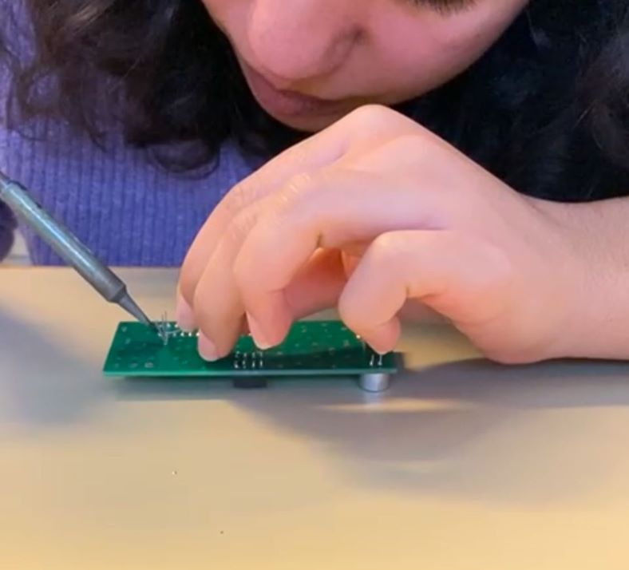
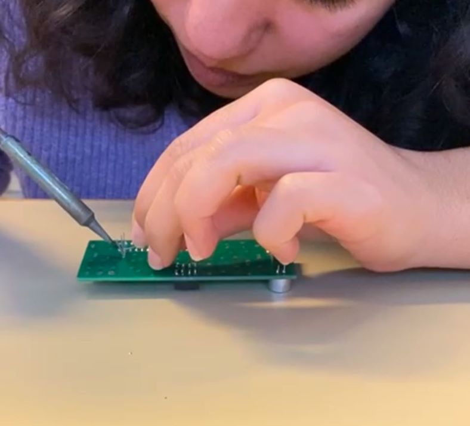
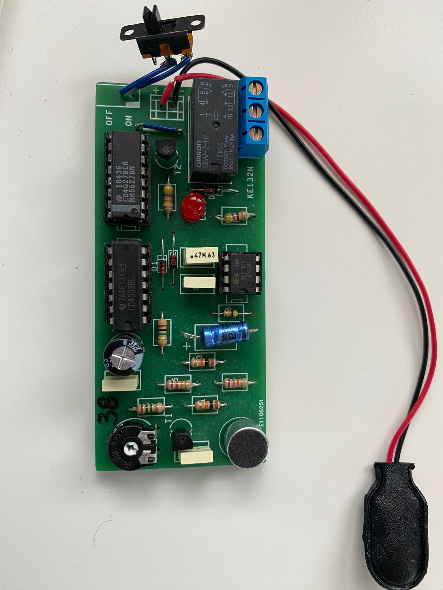

Noise-Activated LED Circuit
Project Overview
This project consisted of analyzing a predefined schematic, designing and optimizing the PCB on Eagle, and then assembling it on a real board. The system uses a microphone to detect sound and lights up a LED when a noise is detected. It combined circuit analysis, PCB design, practical soldering, and debugging into a complete workflow from schematic to functional prototype.
Key Functions of the Circuit
- Power Supply: Provides 9V to all components.
- Control Section: Push-button to start/stop the circuit.
- Monostable Circuit: Generates a temporary pulse when triggered.
- High-Pass Filter: Processes microphone input to detect noise variations.
- RS Flip-Flop: Stores the detection state as memory.
- Power Stage: Drives the relay and LED using a transistor and protection diode.
Implementation
After analyzing the schematic, I reproduced it on Eagle CAD, optimizing the routing between components for signal clarity and minimal interference. I then designed the board layout,
placing and arranging the components in a practical manner for manufacturing and soldering.
 Using the PCB design, I transferred the circuit onto a real board. I soldered all the components, carefully checking the connections to avoid short circuits and ensure functionality.

Using the PCB design, I transferred the circuit onto a real board. I soldered all the components, carefully checking the connections to avoid short circuits and ensure functionality.

Final Outcome
Once assembled, the circuit was tested step by step: verifying power supply, checking the monostable pulse with an oscilloscope, validating the filter response, and confirming the LED activation when the microphone detected a sound input. 
← Back to Projects